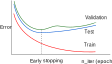
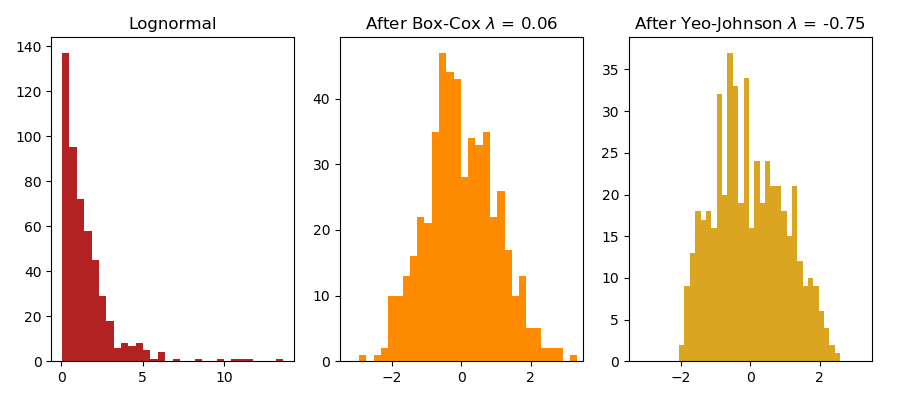
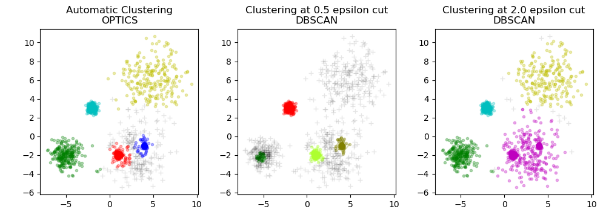

class: center, middle # scikit-learn new features Roman Yurchak *<span style="white-space: nowrap">November 5, 2019</span>* <div style="height:50px"></div> .pull-left[ <img src="img/Symerio_logo-lowres.png" style="width: 50%;" /> ] .pull-right[ <div style="height:10px"></div> <img src="img/scikit-learn-logo.png" style="width: 50%;" /> ] --- # Agenda 1. scikit-learn project 2. New features in v0.21, v0.22 3. Building custom estimators with compatible API 4. Parallelism and performance --- # scikit-learn project [scikit-learn.org/dev/about.html](https://scikit-learn.org/dev/about.html) .pull-left[ - 20 core developers between Paris, Berlin, NY, Sidney and Beijing - Multiple funding institutions. In France: scikit-learn @ INRIA foundation - Consensus based decision process, otherwise vote. ] .pull-right[ <img src="img/inria-foundation-logo.png" style="width: 100%;" /> <small><small> scikit-learn @ INRIA foundation sponsors</small></small> ] --- # Contribution process - Inclusion criteria: - well established algorithms only (3+ years, 200+ citations) - strict code quality standards (incl. API compatibility) - Need to be approved by 2 core developers with no negative reviews - Can be slow: months to years for major features. Review is the bottleneck. <img src="img/sklearn-conribution.png" style="width: 100%;" /> --- # scikit-learn-contrib Selected packages in the scikit-learn ecosystem, - imbalanced-learn - categorical-encoding - sklearn-pandas - ... Also recently [scikit-learn-extra](https://github.com/scikit-learn-contrib/scikit-learn-extra) for state of the art algorithms that do not satisfly scikit-learn inclusion criteria. .pull-left[ [github.com/scikit-learn-contrib](https://github.com/scikit-learn-contrib) ] .pull-right[ <div style="margin-top:-20px"></div> <img src="img/sklearn-contrib-logo.png" style="width: 40%;" /> ] --- # Latest scikit-learn releases .pull-right[ <img src="img/scikit-learn-logo.png" style="width: 50%;" /> <div style="margin-top:-150px"></div> ] **Version 0.21** *May 10, 2019* - 8 months work - 221 contributors - 795 commits, 24 new features <small>(excl. bug fixes & enhancements)</small> **Version 0.22** *Nov, 2019 (provisional)* - 6 months work - 236 contributors - 780+ commits, 31 new features <small>(excl. bug fixes & enhancements)</small> [scikit-learn.org/dev/whats_new.html](https://scikit-learn.org/dev/whats_new.html) --- # ColumnTransformer <div style="margin-top:-40px"></div> ## sklearn.compose Allows to apply different transformers to different columns of arrays or pandas DataFrames: **Example** ```py from sklearn.compose import ColumnTransformer from sklearn.feature_extraction.text import CountVectorizer from sklearn.preprocessing import OneHotEncoder X = pd.DataFrame({'city': ['Paris', 'London'], 'title': ['His Last Bow', 'A Moveable Feast'], 'user_rating': [4, 5, 4, 3]}) column_trans = ColumnTransformer( [('city_category', OneHotEncoder(dtype='int'),['city']), ('title_bow', CountVectorizer(), 'title')], remainder='drop') column_trans.fit(X) ``` <div style="margin-top:-10px"></div> <small>*Added in v0.20 by Andreas Müller, Joris Van den Bossche, Thomas Fan.*</small> --- # OpenML fetcher <div style="margin-top:-40px"></div> .pull-right[ <div style="margin-top: 200px"></div> <div style="margin-top: -200px"></div> ] ## sklearn.datasets Added a fetcher for OpenML, a free, open data sharing platform - ~20000 datasets available at [www.openml.org](https://www.openml.org/) **Example** ```py >>> from sklearn.datasets import fetch_openml >>> iris = fetch_openml('iris') >>> iris['data'].shape (150, 4) >>> iris['feature_names'] ['sepallength', 'sepalwidth', 'petallength', 'petalwidth'] ``` <small>*Added in v0.20 by Andreas Müller and Jan N. van Rijn.*</small> --- # Early stopping in models Stop training earlier when the validation score no longer improves. .center[  ] Supported in SDGClassifier, MLPClassifier, HistGradientBoostingClassifier <small>(and corresponding regressors)</small> ```py from sklearn.linear_model import SDGClassifier SGDClassifier(early_stopping=True, n_iter_no_change=3, tol=0.0001, validation_fraction=0.2) ``` <div style="margin-top:-20px"></div> <small>*Added in v0.20 by Tom Dupre la Tour.*</small> --- # PowerTransformer <div style="margin-top:-40px"></div> ## sklearn.preprocessing Implements Yeo-Johnson and Box-Cox power transformations, that apply a power transform featurewise to make data more Gaussian-like. .center[  ] Also see: QuantileTransform. <div style="margin-top:-10px"></div> <small>*Added in v0.20 by Eric Chang, Maniteja Nandana, Nicolas Hug.*</small> --- # IterativeImputer <div style="margin-top:-40px"></div> ## sklearn.impute Imputing missing values by modeling each feature with missing values as a function of other features in a round-robin fashion. **Experimental** ```py >>> import numpy as np >>> from sklearn.experimental import enable_iterative_imputer >>> from sklearn.impute import IterativeImputer >>> imp = IterativeImputer(max_iter=10, random_state=0) >>> imp.fit([[1, 2], [3, 6], [4, 8], [np.nan, 3], [7, np.nan]]) >>> X_test = [[np.nan, 2], [6, np.nan], [np.nan, 6]] >>> # the model learns that the second feature is double the first >>> print(np.round(imp.transform(X_test))) [[ 1. 2.] [ 6. 12.] [ 3. 6.]] ``` <div style="margin-top:-10px"></div> <small>*Added in v0.21 by Sergey Feldman and Ben Lawson.*</small> <div style="margin-top:-15px"></div> **Note**: `KNNImputer` also available as of v0.22 --- # OPTICS <div style="margin-top:-40px"></div> ## sklearn.cluster A new clustering algorithm related to DBSCAN, that has hyperparameters easier to set and that scales better .center[  ] <small>*Added in v0.21 by Shane, Adrin Jalali, Erich Schubert, Hanmin Qin, Assia Benbihi.*</small> <div style="margin-top:-15px"></div> - Also see [scikit-learn-contrib/HDBSCAN](https://github.com/scikit-learn-contrib/HDBSCAN) --- ### Histogram-based Gradient Boosting Trees Gradient boosting trees inspired by LightGBM, significantly faster than `GradientBoostingClassifier` / `GradientBoostingRegressor` ```py >>> # explicitly require this experimental feature >>> from sklearn.experimental import enable_hist_gradient_boosting # noqa >>> from sklearn.ensemble import HistGradientBoostingClassifier ``` - initially prototyped with numba - re-written in Cython - multithreaded with OpenMP <small>*Added in v0.21 by Nicolas Hug and Olivier Grisel.*</small> --- ### NeighborhoodComponentsAnalysis (1) <div style="margin-top:10px"></div> A metric learning algorithm that learns a linear transformation to improve the classification accuracy in the transformed space. <img src="img/NCA_embedding.png" style="width: 100%" /> <small>*Added in v0.21 by William de Vazelhes.*</small> --- ### NeighborhoodComponentsAnalysis (2) <div style="margin-top:10px"></div> ```python from sklearn.neighbors.nca import NeighborhoodComponentsAnalysis from sklearn.neighbors import KNeighborsClassifier from sklearn.datasets import load_iris from sklearn.model_selection import train_test_split from sklearn.pipeline import make_pipeline X, y = load_iris(return_X_y=True) X_train, X_test, y_train, y_test = train_test_split(X, y, stratify=y, test_size=0.7, random_state=42) knn = KNeighborsClassifier(n_neighbors=3).fit(X_train, y_train) nca = make_pipeline(NeighborhoodComponentsAnalysis(random_state=42), KNeighborsClassifier()).fit(X_train, y_train) print(knn.score(X_test, y_test)) # 0.93 print(nca.score(X_test, y_test)) # 0.96 ``` - Also see [scikit-learn-contrib/metric-learn](https://github.com/scikit-learn-contrib/metric-learn) --- # Decision trees visualization - Can be plotted with matplotlib without graphviz (`tree.plot_tree`) - ASCII representation also available (`tree.export_text`) <div style="margin-top:-20px"></div> ```py >>> from sklearn.datasets import load_iris >>> from sklearn.tree import DecisionTreeClassifier >>> from sklearn.tree.export import export_text >>> iris = load_iris() >>> X, y = iris['data'], iris['target'] >>> decision_tree = DecisionTreeClassifier(random_state=0, max_depth=2) >>> decision_tree = decision_tree.fit(X, y) >>> r = export_text(decision_tree, feature_names=iris['feature_names']) >>> print(r) |--- petal width (cm) <= 0.80 | |--- class: 0 |--- petal width (cm) > 0.80 | |--- petal width (cm) <= 1.75 | | |--- class: 1 | |--- petal width (cm) > 1.75 | | |--- class: 2 ``` <div style="margin-top:-20px"></div> <small>*Added in v0.21 by Andreas Müller and Giuseppe Vettigli.*</small> <div style="margin-top:-20px"></div> - Also see [scikit-learn-contrib/skope-rules](https://github.com/scikit-learn-contrib/skope-rules) --- # Permutation importance Evaluate the importance of different features, by computing the prediction score on a validation set with one randomized feature at a time. - works for any estimator - less sensitive than impurity based feature importance in Random Forest (RF) <div style="margin-top:-20px"></div> <small>*Added in v0.22 by Thomas Fan.*</small> --- # Partial dependence plots Show the dependence between the target response and a set of target features, <img src="./img/sphx_glr_plot_partial_dependence_0021.png" style="width: 75%" /> <div style="margin-top:-40px"></div> <small>*Added in v0.21 by Trevor Stephens and Nicolas Hug.*</small> --- ## Generalized Linear Models (GLM) Poisson, Gamma, Twieedie losses Useful for, - data with non normal error distributions or heteroscedastic data <img src="./img/heteroscedastic-data.jpg" style="width: 40%" /> - predicting positive counts / frequencies Implemented in GLM, maybe gradient boosting later. <small>*Provisionally added in v0.23, corresponding deviance scores available in v0.22. *</small> --- ## Work in progress - Improve pandas integration - Better handling of categorical data - see also `pandas.Categorical` dtype - Passing around information that is not (X, y) - sample properties, feature names, target properties - Model diagnostics - Better conformance to the standard API: common tests [scikit-learn.org/dev/roadmap.html](https://scikit-learn.org/dev/roadmap.html) --- # Rolling your own estimator - Inherit from base classes and re-use validators ```py from sklearn.base import BaseEstimator, ClassifierMixin from sklearn.utils.validation import check_X_y, check_array, check_is_fitted class MyClassifier(BaseEstimator, ClassifierMixin): def __init__(self, demo_param='demo'): self.demo_param = demo_param def fit(self, X, y): X, y = check_X_y(X, y) self.coef_ = .. def predict(self, X): check_is_fitted(self, ['coef_']) ... ``` - API compatibility is enforced by ~60 common checks using `check_estimator` --- # Estimator tags - programmatic inspection of estimator capabilities (e.g. sparse or multilabel support) - also determine the tests that are run by `check_estimator` Useful when developing libraries that aim to comply with the scikit-learn API. **Experimental** ```py class MyMultiOutputEstimator(BaseEstimator): def _more_tags(self): return {'multioutput_only': True, 'non_deterministic': True} ``` <small>*Added in v0.21 by Andreas Müller.*</small> --- ## Parallel computing and scikit-learn **Most scientific Python code based on numpy is parallelized by default**, due to multithreaded BLAS (OpenBLAS, MKL). - `export OMP_NUM_THREADS = 10` (or lower) on shared servers -- Use of threading and multiprocessing with `n_jobs` parameter in scikit-learn via joblib, - better performance, but communication overhead; can be slower - multiple levels of parallelism can lead to CPU oversubcription - **Python 3.8**: PEP 574, Pickle protocol 5 with out-of-band data .pull-right[ <img src="./img/joblib_logo.svg" style="width: 35%" /> ] --- ## Distributed computing Joblib supports Dask as a backend, ```py import joblib from sklearn.grid_search import RandomizedSearchCV # [...] search = RandomizedSearchCV(model, param_space) with joblib.parallel_backend('dask'): search.fit(X, y) ``` Also a number of scikit-learn algorithm re-implemented in a distributed way in [https://ml.dask.org/](https://ml.dask.org/) Can be run in YARN with `dask-yarn`.